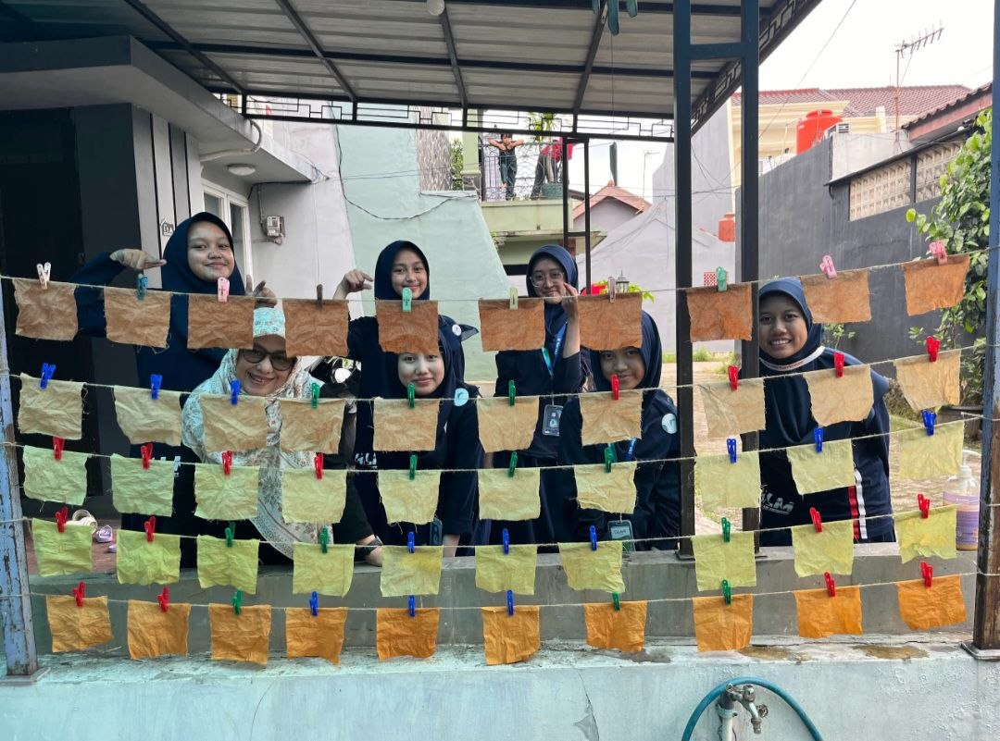
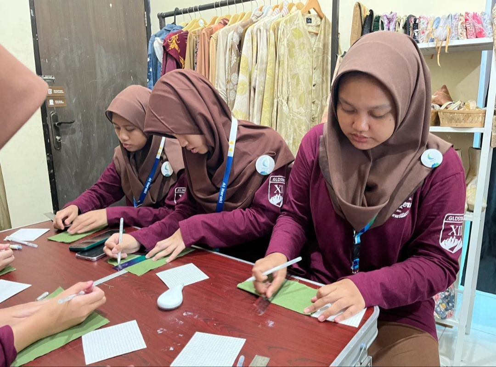
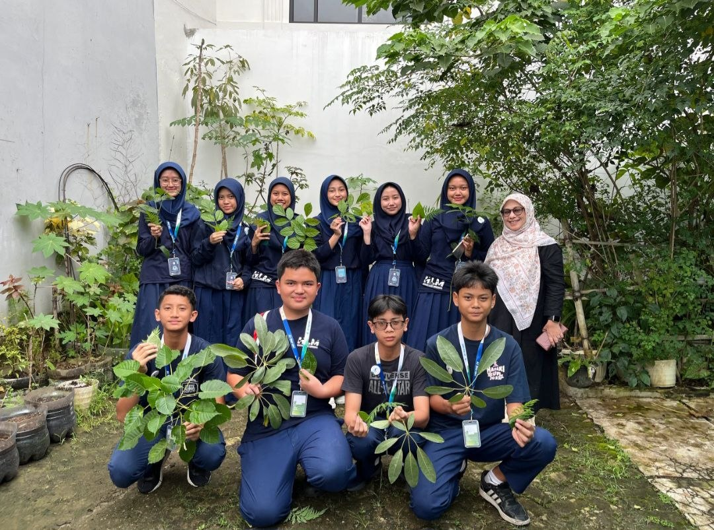
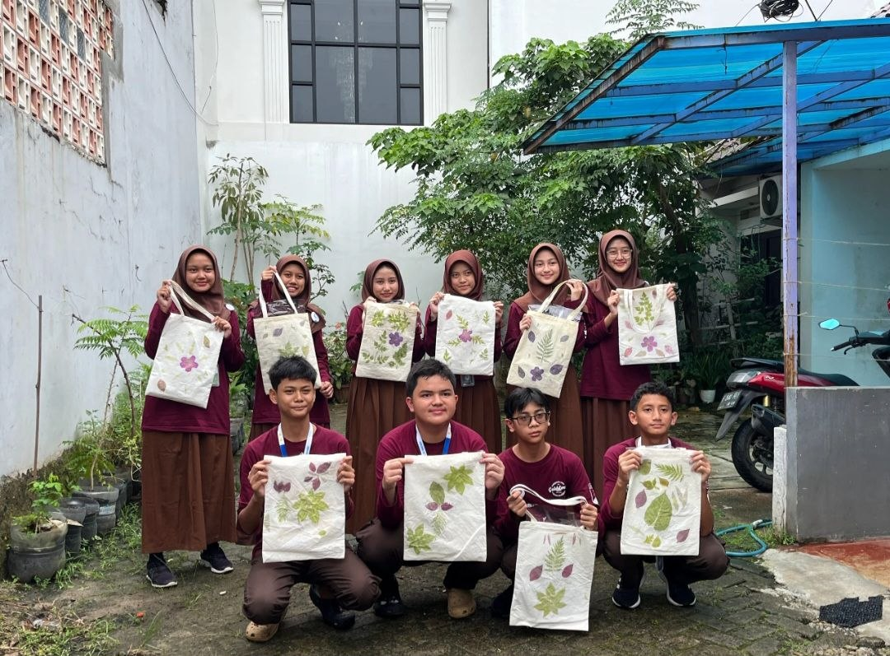

Karya Nyata dari Proses Belajar
Website ini merupakan media pendukung untuk menampilkan hasil Ujian Praktik Terintegrasi. Konten utama pada website ini adalah video broadcasting pembelajaran yang berisi penyampaian teks argumentasi secara lisan.
Website ini merupakan website portofolio digital yang berisi hasil karya dan pembelajaran saya selama mengikuti Ujian Praktik Terintegrasi.
Tujuan pembuatan website ini adalah untuk menampilkan karya yang telah saya buat serta melatih kemampuan saya dalam membuat website sederhana menggunakan HTML.
Topik yang saya angkat dalam karya ini adalah keterkaitan antara sistem pendidikan dengan permasalahan lingkungan, khususnya limbah daun dan dampak dari fenomena fast fashion. Saya juga membahas bagaimana program Internship Curriculum (IC) dapat menjadi solusi melalui pembelajaran berbasis praktik, salah satunya melalui kegiatan ecoprint.
Melalui video dan karya ini, saya berharap penonton dapat menyadari bahwa menjaga lingkungan merupakan tanggung jawab bersama. Hal kecil seperti memanfaatkan limbah atau mengurangi penggunaan barang yang berlebihan dapat memberikan dampak yang besar.
Saya juga berharap penonton dapat melihat bahwa pembelajaran tidak hanya terjadi di dalam kelas, tetapi juga melalui pengalaman nyata. Dengan adanya program seperti IC, siswa dapat lebih siap menghadapi masa depan.
Membuat video dan teks argumentasi ini cukup menantang, tetapi juga seru. Saya belajar bagaimana menyusun pendapat dengan lebih jelas dan memahami masalah lingkungan di sekitar. Saya berharap program IC bisa terus berjalan karena sangat membantu siswa untuk belajar secara nyata.



